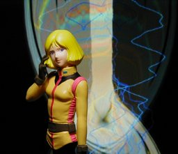
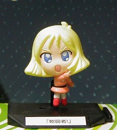

ハロカプ vol.2 セイラ・マス

台部画面外 顔のアップ
上はメガハウスの機動戦士ガンダムハロカプ 第二弾のセイラ・マスです。腰から上のみのミニフィギュアです。「原作」というか「キャラデザ」の安彦良和のセイラっぽいところが気に入って手に入れました。というかこれ以外でまともな顔のを求めようとすると万札が必要な気が…… 左下のおまけはバンダイちまこれガンダム２のセイラ・マスです。子供のころは SD ものも好きだったのですが、感覚が鈍ったのか見馴れてしまったのか、今一つ食指が動きません。ただ、SD にすれば崩れとかは気にならないですし、こういったセリフ付きだと楽しくていいですね。最近のアニメで名ゼリフというと「丸焼きよ」あたりになるんでしょうか？……違うか。 背景は Winamp の MilkDrop プラグインを WinShot したものです。 ちなみに「軟弱者」でググると T シャツがひっかかりました。い……いい時代になったモノだ。「シャア専用」は知っていたのですが「坊やだからさ」もあるんですね。「逃げちゃダメだ！」とか「月にかわって……」とかはまだないのか。T シャツは下着か部屋着としてしか使わないから買わない……ハズ。 更新：06/03/09 初公開：2006年03月09日 03:48:03 最新版：2006年03月09日 03:50:34
Links: ハロカプ 第二弾: http://www.megahouse.co.jp/products/capsule/halocap2/index.html (hbm) ちまこれガンダム２: http://www.bandai.co.jp/gashapon/products_item/item/4543112216236000.html (hbm) 「丸焼きよ」: http://www.amazon.co.jp/exec/obidos/ASIN/B000ASA04S (hbm) MilkDrop: http://www.milkdrop.co.uk/ (hbm) WinShot: http://www.woodybells.com/winshot.html (hbm) T シャツ: http://www.amiami.com/shop?vgform=BrowseCategory&category_id=676 (hbm)